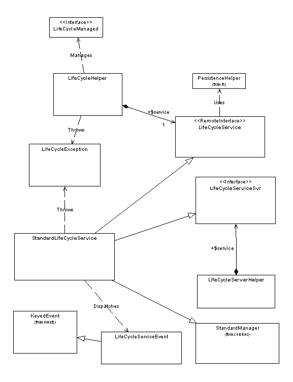

See: Description
| Interface | Description |
|---|---|
| _LifeCycleManaged | |
| IteratedLifeCycleManaged |
Information that is
Iterated and is LifeCycleManaged is
handled differently than other LlifeCycleManaged information. |
| LifeCycleLWService |
LifeCycleLWService provides client invokable methods to Workflow/Lifecycle LW objects.
|
| LifeCycleManaged |
LifeCycleManged interface objects will enter a LifeCycle process upon
creation.
|
| LifeCycleService |
LifeCycleService provides client invokable methods to life cycle services.
|
| Class | Description |
|---|---|
| _LifeCycleSignature | |
| _State | |
| _Transition | |
| LifeCycleHelper |
LifeCycleHelper provides client invokable methods to life cycle services.
|
| LifeCycleHistory |
LifeCycleHistory captures an audit traill for an object as it moves through
a LifeCycle.
|
| LifeCycleHistoryURLActionDelegate |
Defines utility methods for creating URLs for lifecycle history for a
user.
|
| LifeCycleProcessorService |
When executed from a class that extends BasicTemplateProcessor, these
script call can be invoked by using the 'useProcessorService service
= ' html template entry.
|
| LifeCycleServerHelper |
Provides server side access to the methods of the LifeCycleServiceSvr
interface.
|
| LifeCycleSignature |
LifeCycleSignature captures a role player's ballot and comments for
a specific object in a specific phase of a life cycle.
|
| StandardLifeCycleLWService |
Standard implementation of the life cycle service interfaces
|
| StandardLifeCycleService |
Standard implementation of the life cycle service interfaces
|
| State |
State is a specialization of
EnumeratedType to provide localizable
state values. |
| StateProcessorService |
When executed from a class that extends BasicTemplateProcessor, these
script call can be invoked by using the 'useProcessorService service
= ' html template entry.
|
| Transition |
Supported API: true Extendable: false |
The Life Cycle Managed Service provides functionality
to manage the states that information passes through, the transitions
required to
move from state to state, and the behavior associated with an object
while it is in a
specific information state.

The life cycle service is
designed to be a plug-and-play component in the Windchill system and is
intended to be used for both client and server development.� Business objects, asserted as being
LifeCycleManaged in the object model, are assigned a state at creation and
while in the life cycle, it can be assigned to any of the defined phases of an
associated life cycle.� Life cycle state
information is held in a state cookie.�
The business object should not interact directly with the state cookie,
but instead operate on it through the life cycle service�s external interface.
The LifeCycleManaged interface provides an abstraction of a
plug-and-play
component. The intent is that, in an object model, a business object
would assert
that it is LifeCycleManaged by inheriting (that is, it implements) the
LifeCycleManaged interface. With this assertion, the business object
can be transitions to states that are defined for the selected life cycle.
There are 2 types of life cycle managed:
�
Basic Life Cycle
Managed:� Provides a list of states and
transitions for progression to future states.�
The state of the object is managed via set state actions applied to the
object.
�
Advanced Life
Cycle Managed:� Provides everything Basic
Life Cycle Managed provides plus provides additional tools to help move the
object through it�s life cycle.� The
additional tools are life cycle adhoc permissions, workflow processes, criteria
and teams.
The LifeCycleHelper provides an abstraction as the API to the life
cycle service.
The API�s methods can be categorized as either local or remote
invocations. The
local methods are getters of information, typically from cookies that
are held in
the business object. The remote methods serve as wrappers to a service
that
promotes server-side functionality.
The LifeCycleServerHelper provides an abstraction of the server-side
API to the
life cycle services. These methods can be invoked only from server-side
processing.
The LifeCycleService provides an abstraction that specifies and
promotes server side
functionality as a service that is remotely available for use by a
client. This
interface is intended to define all the necessary server-side
functionality for life
cycle management.
The LifeCycleServiceEvent provides an abstraction of a specialized
keyed event
used by the life cycle service to signal other services that something
has occurred.
This gives other services in a plug-and-play architecture the
opportunity to act
accordingly upon these events. Validation, vetoing, and post-processing
are
typical reactions to events.
The life cycle service emits the following events:
STATE_CHANGE
Emitted when an object�s state changes. This occurs at creation,
promotion, demotion or set state of an object.
ENABLE_LIFECYCLE
Emitted when a life cycle is enabled.
DISABLE_LIFECYCLE
Emitted when a life cycle is disabled.
SUBMIT
Emitted when a life cycle managed object is submitted to the gate.
PROMOTE
Emitted when a life cycle managed object is promoted to the next phase.
VOTE
Emitted when a reviewer or promoter votes.
DEMOTE
Emitted when the life cycle managed object is demoted to the previous
phase.
DENY
Emitted when a life cycle managed object is denied (that is, it is
moved from
the gate back to the current phase).
DROP
Emitted when a life cycle managed object is dropped (that is, it is no
longer
associated with a life cycle).
REASSIGN
Emitted when a life cycle managed object is reassigned to a different
life
cycle.
AUGMENT
Emitted when a life cycle role participant list is updated.
SET_STATE
Emitted when the
The LifeCycleException provides an abstraction of an abnormal
occurrence or
error in the usage or processing of the life cycle service. This
exception can be
localized through a given resource bundle, and other exceptions can be
nested
within it.
When Advanced Life cycle Managed objects are persisted, a team is
created and assigned to the object if the team does not already have a team
assignment.� Roles are resolved into the
team based on the Team Template, the life cycle Phase Template and in PDMLink,
the Context Team.� For more information
on role resolution, look at the wt.team javadoc or look in the Administrators
Guide.� The teams are used by life cycle
to assign ad hoc life cycle permissions for the roles in the Life cycle Phase Template.� To create a team prior to persistence, use
TeamReference teamRef=wt.team.TeamHelper.createTeam(WTRoleHolder2
roleHolder, String teamName, Persistable object);
Wt.team.Team.setTeam((TeamManaged)object, teamRef);
The life cycle service is an event listener. The service listens for
and acts upon the
following standard Windchill events:
PRE_STORE
When a PRE_STORE event is emitted for a life cycle managed object, the
life
cycle service initializes the state cookie by assigning an initial
state to the
object. The teams are created and ad hoc access is applied to Advanced
Life Cycle Managed objects.�
POST_STORE
When a POST_STORE event is emitted for a life cycle managed object, the
life cycle service associates phase information, workflows and criteria
to Advanced Life Cycle Managed objects.
CLEANUP_LINK
� When a CLEANUP_LINK event is emitted for a life cycle managed object,
the life cycle service completes its portion of the delete action by
removing
the life cycle associated data. When emitted for a life cycle, the life
cycle
service completes its portion of the delete action by removing the PhaseSuccession,
PhaseLink,
AdHocAclLink, and DefaultCritierion links.
PRE_DELETE
� When a PRE_DELETE event is emitted for a life cycle template and the
template is in
use by a life cycle managed object, the delete is prohibited. When the
object
being deleted is a WfProcessTemplate or a WfProcessTemplateMaster, and
that WfTemplate is referenced by a phase or gate of the life cycle, the
delete is
prohibited.
PRE_CHECKIN,
PRE_CHECKOUT, PRE_MODIFY
� When a PRE_CHECKIN, PRE_CHECKOUT, or PRE_MODIFY event is
emitted for a life cycle managed object, the life cycle service
prevents
checkin, checkout, or modification of the object, if that object is pending
promotion (that is, the object is at the gate).
The checkin of a life cycle is not allowed when that life cycle is in
use. Life
cycle managed objects that are created against a working copy of the
life
cycle are assumed to be test objects. The checkin is prevented to
ensure that
the test objects are cleaned up.
When a life cycle is checked out, the objects and links associated with
the life
cycle are copied.
Once you create a life cycle managed object that references a working
copy of
a life cycle, changes to the working copy the life cycle are no longer
allowed.
You must delete the life cycle managed objects that reference the
working
copy of the life cycle before you can make additional changes to that
working
copy.
RETEAM
� Life cycle managed objects are team managed objects. When the
RETEAM event is emitted for a life cycle managed object (that is, the
object is reassigned to a new team), the life cycle service updates the
life cycle ad hoc permissions for advanced life cycle managed objects.
POST_ROLLBACK
� When a POST_ROLLBACK event is emitted for any life cycle managed
object (that is, an object is rolled back to a previous iteration), the
life cycle
service backs up the state of the object to match this old iteration.
Also, the
history associated with these now obsolete iterations is also removed.
POST_CHANGE_DOMAIN
� When a POST_CHANGE_DOMAIN event is emitted, any attempt to move
the life cycle to a location other than the personal cabinet or the
System
cabinet is vetoed.
There are some multi object
API�s provided to help you set the state and reassign the lifecycle to a
collection of lifecycle managed objects.�
�
WTList
reassign(WTList, LifeCycleTemplateReference, WTContainerRef, boolean
/*preserveState*/)�
o
This API allows
you to reassign the life cycle template on all objects in the WTList to the
specified template.� If the boolean is
set to true, it will attempt to preserve the state of the objects in the list.� If the object is in a state that does not
exist in the new lifecycle template, it will be set to the initial state.
o
Example:�
�
The selected
lifecycle template has 3 states; Open, In Work, Released
�
Document 1 in the
list is currently in the In Work state.�
When the reassign is done, document 1 will be assigned the new life
cycle template and will be in the In Work state.
�
Document 2 in the
list is currently in the Under Review state.�
Since Under Review does not exist in the new lifecycle template, the
object will be reassigned to the new life cycle template, but will be in the
initial state of Open.
�
WTList reassign
(WTList, LifeCycleTemplateReference, WTContainerRef, State)
o
This API allows
you to reassign the life cycle template of all objects in the list to the new
life cycle template at the specified state.�
If the state is null, all objects will be set to their initial state.
o
Example 1:
�
The selected
lifecycle template has 3 states; Open, In Work, Released
�
Reassign is
called specifying the state as being Released.
�
All objects in
the list are reassigned to the new life cycle template and their state will be
Released.
o
Example 2
�
The selected
lifecycle template has 3 states; Open, In Work, Released
�
Reassign is
called with a null state.
�
All objects in
the list are reassigned to the new life cycle template and their state will be
Open.
�
WTList
setLIfeCycleState (WTList, State, boolean /*terminateAssocProcesses*/)
o
This API allows
you to set the state on all objects in the list to the specified state.� If the boolean is set to true, all associated
workflow processes will be terminated.�
It is the responsibility of the calling API to ensure all objects in the
list have the specified state in their life cycle template.
Code Example:� You want to reassign a
group of objects to a particular template to a particular state.� In this example, you have a query result of
the life cycle managed objects you want to reassign.
WTList list = new
WTArrayList(results.size()/.75+1);
while
(results.hasMoreElements()) {
��
list.add((LifeCycleManaged)results.nextElement())
}
LifeCycleTemplateReference
lctr=LifeCycleHelper.service. getLifeCycleTemplateReference(
name, container );
State
released=State.toState(�RELEASED�);
LifeCycleHelper.service.reassign(list,
lctr, container, released);